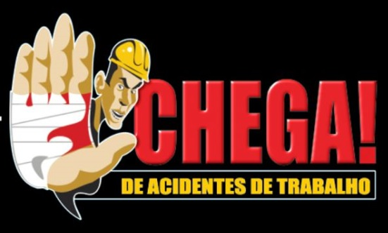
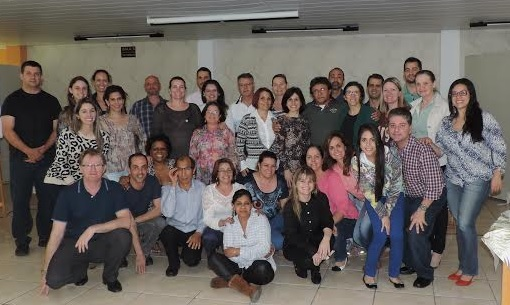
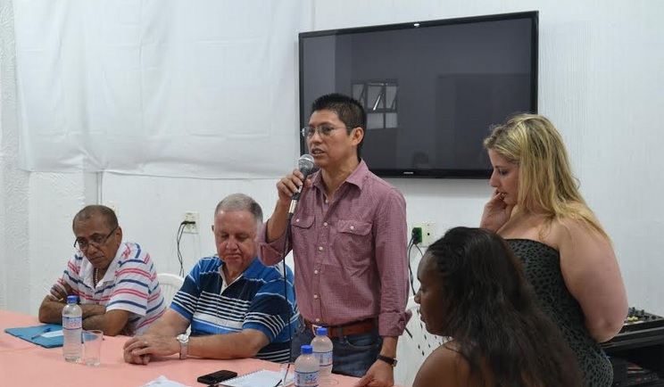

A saúde e segurança é um tema de relevância e merece toda atenção da Confederação Nacional dos Trabalhadores da Indústria Gráfica (CONATIG). O órgão conta que o cenário seria outro se fosse aplicada a Norma Reguladora 12 do Min...
leia maisSegurança no Trabalho
CONATIG lembra e alerta sobre vítimas de acidentes e doenças de trabalho

No ano de 2013, houve 717.911 acidentes do trabalho no País, registrados pelo INSS, em diversas profissões. O montante equivale a acidentes típicos, acidentes de trajeto e doenças do trabalho, além dos acidentes que não foram registra...
leia maisCerest catarinense alinha ações de 2015 atento às categorias

Os trabalhadores gráficos e demais categorias profissionais participaram de encontro anual de avaliação e planejamento do Centro de Referência em Saúde do Trabalhador (Cerest) de Santa Catarina. O evento, que teve como objetivo alinhar...
leia maisUNI e Conatig promovem seminários pró-saúde e contra discriminação

Neste final de semana, nos dias 18 e 19, a Confederação Nacional dos Trabalhadores nas Indústrias Gráficas (Conatig), através da iniciativa da UNI Gráficos e Embalagens Américas, promoveu, em parceria ao órgão intersindical latino-...
leia maisRS: MPT em Santa Maria lança campanha sobre uso de EPIs
O MPT em Santa Maria lançará, a partir desta quinta-feira (20), campanha de combate ao acidente de trabalho e à negligência no uso dos equipamentos de proteção individual (EPIs). A campanha é voltada especialmente para o ramo da cons...
leia maisConatig endossa orientação relevante para prevenção da LER/Dort
A forma como a atividade profissional é exercida pelo gráfico no local de trabalho pode provocar doenças ocupacionais devido a certas posturas, movimentos repetitivos e o tempo de duração do serviço. O corpo pode sofrer ainda em conta...
leia mais